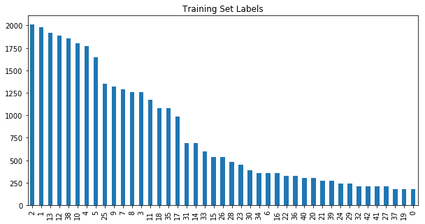
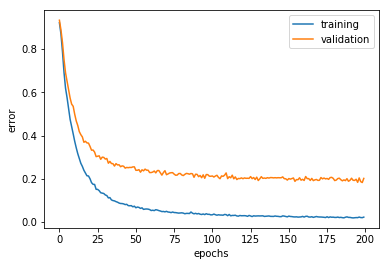
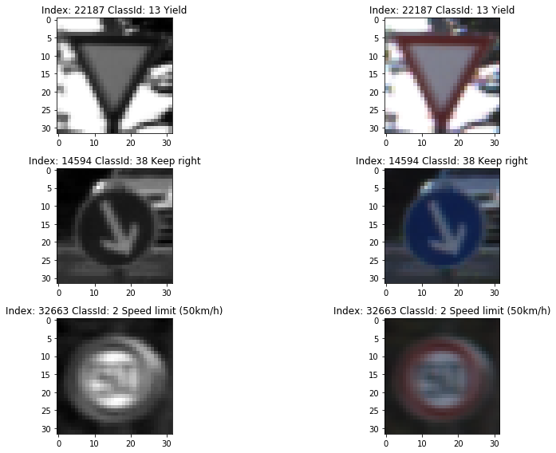

Build a Traffic Sign Recognition Project
The goals / steps of this project are the following: * Load the data set (see below for links to the project data set) * Explore, summarize and visualize the data set * Design, train and test a model architecture * Use the model to make predictions on new images * Analyze the softmax probabilities of the new images * Summarize the results with a written report
You're reading it! and here is a link to my project code
I used the pandas library to calculate summary statistics of the traffic signs data set:
Here is an exploratory visualization of the data set. It is a bar chart showing the class distribution in the training set. We can see that the training set data is not balanced.

As a first step, I decided to convert the images to grayscale because helps luminance is more important than color in identifying visual features such as edges, shapes and objects. Converting images to grayscale reduces amount of information contained in each image while still containing the information needed for classifying traffic signs thus improving signal to noise ratio.
When image is not turned into grayscale, the model seems to pickup too much noise from training set and overfits. Here is a plot of training and validation error before color is removed. Notice the gap between training and validation is about 20%.

Here are few examples of traffic sign images before and after grayscaling.

The I qualized the image histogram to improve the contrast of the images by streching out the intensity range. This step is chosen because some of the image are taken under poor lighing conditions and are either too dark or too bright. Here are few images before and after image histogram equalization.
![histogram equalization][equalization]
As a last step, I normalized the image data because ...
I decided to generate additional data because ...
To add more data to the the data set, I used the following techniques because ...
Here is an example of an original image and an augmented image:
The difference between the original data set and the augmented data set is the following ...
My final model consisted of the following layers:
| Layer | Description |
|---|---|
| Input | 32x32x1 grayscale image |
| Convolution 5x5 | 1x1 stride, valid padding, outputs 28x28x12 |
| RELU | |
| Max pooling | 2x2 stride, outputs 14x14x12 |
| Convolution 5x5 | 1x1 stride, valid padding, outputs 10x10x32 |
| RELU | |
| Max pooling | 2x2 stride, outputs 5x5x32 |
| Fully connected | outputs 480, with dropout keep_prob=0.3 |
| RELU | |
| Fully connected | outputs 160, with dropout keep_prob=0.3 |
| RELU | |
| Fully connected | outputs 43, with dropout keep_prob=0.3 |
| Softmax |
To train the model, I used an Adam optimizer with batch size set to 128 and learning rate set to 0.0005 and 200 epochs.
My final model results were: * training set accuracy of 99.7% * validation set accuracy of 96.1% * test set accuracy of 94.2%
If an iterative approach was chosen:
What was the first architecture that was tried and why was it chosen?
I choose the Lenet architecture as the first architecture because it's proven to be effective on similar problems such as hand written digit classification. I changed the output to 43 classes to fit our dataset but kept all input and hidden layer architecture unchanged.
What were some problems with the initial architecture?
The Lenet architecture is underfitting to our traffic sign dataset. Both of the training and validation accuracy is low between 70% and 80% indicating the Lenet architecture has a high bias and is not capable of learning complex representations.
How was the architecture adjusted and why was it adjusted?
Since the starting architeture has a high bias and low variance, I decided to make the hidden layers larger to give it more variance. After adding more neurons to the hidden layers, the model seems to stuck at a place where it is overfitting the training set. The evidence is a high training accuracy ~99% paired with a low validation accuracy ~ 75%. So I added dropout to the fully connected layers, to regularize the coefficients and force the network to learn a set of redundent representation of the features. Dropouts are not added to the convolutional layers since the convolution already has regularization by coefficients sharing.
The width of the layers and the dropout percentages are tuned to find a sweet spot where the model is flexible enough to capture all the variances but not overfitting. After some trial and error, the final architeture (as descriped in the table above) has wider hidden layers and achieves 99.7% training accuracy and 97% validation accuracy.
Here are five German traffic signs that I found on the web:
The first image might be difficult to classify because it's similar to other speed limit signs with only difference being the first digit. The last image (road work) might be difficult to classify because it's quite similar to the pedestrians sign.
Here are the results of the prediction:
The model was able to correctly guess 3 of the 5 traffic signs, which gives an accuracy of 60%. This compares poorly to the accuracy on the test set of 94.2%.
The code for making predictions on my final model is located in the 31th cell of the Ipython notebook.
The top 5 probablities are shown below the images in the previous diagram.
The model is quire sure about the prediction on #1 #2 #3 and #4 all with a probability close to 100% for the highest scoring class. The model correctly classified #2 #3 and #4 while incorrectly classified #1 to a class that does not seem to be related.
The model also classified #5 wrong with a low confidence in the prediction. The traffic sign in this image looks quite similar to the signs the model predicts (especially with Pedestrians), so it's not a surprise.
It's quite mysterious how the model predicts #1 as a Slippery Raod. I need to investigate more to understand the root cause. Visualizing the neural network might help better understand this.